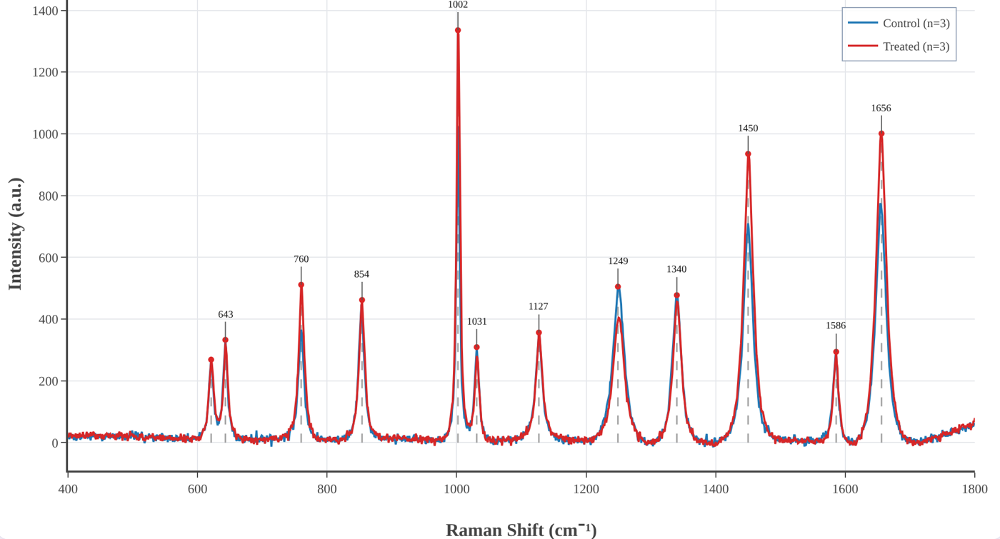
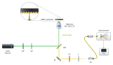

01The figure that took a whole afternoon
A Raman measurement takes seconds. Turning it into a figure for a paper used to take me the rest of the day. The spectrometer software exported one format; the program that removed the baseline wanted another; the plotting program wanted a third. Somewhere along the way the cosmic-ray spikes were removed by a filter whose settings I could not see, the baseline was fitted with a polynomial whose order was buried in a dialog box, and the averaged spectra came out without the standard deviation anyone would ask for in review.
Worse, I could not write it down. A methods section should let another group repeat the analysis exactly: which despiking threshold, which baseline, which smoothing window, which normalisation. When the pipeline is spread over three programs, half of those numbers are defaults nobody remembers choosing. Two labs applying “baseline correction” to the same spectrum can publish different peak ratios, and neither can say why.
So I started writing a small tool for myself, with one rule: every step that changes the data must be visible, adjustable and reportable. That small tool became RNSpectraX.
02Step 1 — one tab, one pipeline
The first version did one job: take raw spectrometer files and carry them, in one place, through the steps every Raman and SERS spectrum needs. Load the files, remove the spikes, subtract the baseline, smooth, normalise, average the replicates, find the bands. Each step has its own panel, its parameters are on the screen, and the result updates as you change them.
The decision that shaped everything after it was to run the whole thing inside the browser. There is nothing to install and no account to create — useful in a teaching lab or on a borrowed computer — and, more importantly, the spectra never leave your machine. Clinical samples, unpublished results and someone else's data stay where they are; the app is just a web page doing arithmetic.

03Step 2 — not every dataset is a spectrum
It soon became clear that most data in a lab are not spectra. A calibration curve. An I–V characteristic. A decay to fit with an exponential. An absorbance series from a UV–vis spectrometer with forty columns in one file. These are all X–Y data, and they all need the same two things: a clean graph with error bars, and a fit you can defend.
So RNSpectraX grew a second workspace, the XY plotting and fitting mode. It reads pasted values, CSV and Excel files, lets you tick the columns to plot and average replicate columns with SD or SEM, and fits linear, polynomial, exponential, power, logarithmic, Gaussian, Lorentzian, Langmuir and Hill models. The fitting was then made properly rigorous: Levenberg–Marquardt refinement, weighting by 1/σ² when error bars are given, and every parameter reported with its standard error, R² and reduced χ². Axis presets for FTIR, UV–vis, XRD, XPS, I–V, kinetics and thermal analysis followed, and later a resonance tracker for SPR and LSPR sensors that follows a dip through a concentration series and reports its shift, width, Q factor, LOD and LOQ.
04Step 3 — the release that fixed my own mistakes
The version I am proudest of added almost nothing new. Checking every step of the code against its derivation on paper, some of it did not survive. The Savitzky–Golay smoother was evaluating each local fit at the edge of its window instead of the centre, quietly shifting every band by a few wavenumbers. The rubber-band baseline was built from the wrong half of the convex hull. The despiker was “repairing” the steep flanks of genuine sharp bands. Peak detection used a fixed threshold that nobody could see.
Version 3.3 fixed all of it, and the release notes say so in plain words. The polynomial baseline became iterative (ModPoly) so it runs under the bands instead of through them, peaks are found by topographic prominence with a visible threshold, and the band library assigns a peak only when a literature band is close enough — otherwise it says Unassigned instead of guessing. It was a humbling lesson and the best argument for the project's rule: if every step is visible, every step can be checked, including by me.
05Step 4 — from figures to answers
A clean figure is the start of an analysis, not the end. Version 3.4 added the tools that turn spectra into numbers you can report:
- Analysis panel — band fitting with Gaussian, Lorentzian or pseudo-Voigt profiles and standard errors; band heights, areas and ratios across every spectrum with Welch's t-test or ANOVA; principal component analysis with 95 % confidence ellipses; and difference spectra between groups.
- Identify — your spectrum ranked against 202 reference spectra of 141 biomolecules from the open RamanBiolib library, with the original publication of each match cited next to it.
- Band libraries — peak assignments from a biological-tissue library or, new this week, the organelle marker bands of The Raman Map of the Human Cell, cited automatically in every report.
- Shift calibration from a silicon, polystyrene or diamond band, excluded regions, and derivative spectra.
- Project files that save and reopen everything, and a Methods text generator that writes the methods paragraph — with references — from the settings actually used.
That last feature closes the loop that started the project: the analysis you ran and the analysis you describe can no longer drift apart.
06What RNSpectraX refuses to hide
No hidden defaults. Every parameter that changes the data is on the screen, and the processed data can be downloaded at every stage — raw, despiked, baseline, corrected, smoothed, normalised.
No data leave the tab. All processing runs locally; there is no server that ever sees a spectrum.
Suggestions, not identifications. Band assignments and library matches are labelled as suggestions and can be edited; the sources are always cited.
Written-out mathematics. A methods guide explains every step — what it does, the equations, when to use it — so it can be described exactly in a paper.
07The other half of every paper: the setup figure
With the data figures under control, the slowest figure in every manuscript became the one I had not thought about: the schematic of the setup. Laser, mirrors, beam splitter, objective, sample, spectrometer — drawn by hand in a vector editor, beam by beam. It looks fine until a reviewer asks for an extra filter, or a co-author moves the dichroic. Then every beam after it has to be redrawn, and nothing checks that the light could actually go where the lines say it does.
That is where RNBeamX started: a drawing tool in which you place the optics and the light is traced for you.
08Step 1 — let the light draw itself
The first version was a canvas of optical parts and a ray tracer. Beams reflect from mirrors, split at beam splitters, focus through lenses and stop at detectors, and they move live as you drag or rotate anything. The same setup can be shown in three looks: Schematic line art for Optics Express-style figures, Shaded metal-and-glass for glossier journals, and a 3D optical table with posts, shadows and glowing beams for graphical abstracts. It exports SVG and PDF with real, editable text, and TIFF or PNG with the DPI written in.

09Step 2 — physics you can trust
A tracer that only routes lines is a fancy pen. Each upgrade since has made the drawing a little more of a model. Polarisation is followed with Jones calculus through wave plates, polarisers, PBS cubes and isolators. Prisms disperse with Sellmeier glass data and gratings obey the grating equation. Gaussian beams have real waists and Rayleigh ranges; ghost reflections follow the Fresnel equations, so Brewster windows behave; optical path and phase are tracked, so a Michelson shows fringes when you move its mirror. Fibres, cavities and ring resonators work as they should.
Then came calculations that go beyond rays: reflectance of thin-film stacks and SPR prisms by the transfer-matrix method with measured optical constants, a rigorous grating solver (RCWA), nanoparticle-on-mirror gaps, ellipsometry, waveguide modes and the colour of a film. Each was checked against analytic results and published values, and the whole app now runs more than five hundred automated tests on every change.
10Step 3 — from setups to whole figures
Journals do not want a setup on its own; they want a figure. So the next upgrades were about the page around the optics:
- Journal presets at final print size and a journal check that flags text under 5 pt, hairlines, unlabelled optics and red–green beam pairs before an editor does.
- Automatic label placement, a caption helper that writes the abbreviation list, and colour-blind-safe beam colours.
- 32 ready-made templates — interferometers, confocal and light-sheet microscopes, Raman and FTIR spectrometers, pump–probe, SPR — each a working model to edit, not a picture.
- Animation with one-click presets (a 3D turn of the whole setup, a switch-on, a scan) exported as MP4, WebM or GIF for talks.
- PowerPoint and TikZ export and share links.
11Step 4 — beyond the optical table
Real figures need more than optics on the page — and so a setup tool slowly turned into a small figure studio. Today RNBeamX holds 183 parts (366 counting their variants), and the newest ones are not optics at all:
- Graphical-abstract and lab parts: nanostructures, unit cells, energy-band diagrams, labware, instruments, cells and biomolecules.
- Data and image panels: a vector data plot as panel b, and microscope images with calibrated scale bars, length measurements with mean and standard deviation (made for nanorods), a porosity analysis for SERS substrates, and an image editor for background removal, cropping and colour.
- Diagrams: neural networks, CNN and Transformer blocks, and flowcharts whose connectors stay attached.
- Project planning, the latest addition: Gantt charts typed as plain text, and PERT networks that lay themselves out and find the critical path — the work plans every proposal needs.
- Learn pages that explain each component to a newcomer, with the physics and a live demo.
12The bridge between the two
The two tools were written separately but for the same figure. A paper on a sensor typically needs a setup (panel a) and a processed spectrum (panel b). So RNSpectraX has a → RNBeamX button that sends the processed spectrum straight across as a vector data panel, ready to sit next to the setup it was measured on. One measurement, two tabs, one figure — which, three programs and two file conversions ago, is where this story began.
13The two tools at a glance
| RNSpectraX — spectral analysis | RNBeamX — optical figures | |
|---|---|---|
| Purpose | From raw spectra and XY data to analysed, publication-ready plots | Optical setups, graphical abstracts and multi-panel figures with traced light |
| Input | Ocean Optics, Horiba, Renishaw, Bruker, WITec, JCAMP-DX, SPC, CSV, Excel | Parts placed by click, templates, your own SVG or photos, data and images |
| Core | Despiking, five baselines, smoothing, normalisation, averages with SD/SEM, peak detection and assignment | Ray tracing with reflection, refraction, dispersion, polarisation, Gaussian beams and interference |
| Analysis / physics | Band fitting, ratios with t-test / ANOVA, PCA, difference spectra, library identification, curve fitting with uncertainties, resonance tracking | Thin films and SPR (transfer matrix), gratings (RCWA), plasmonic gaps, ellipsometry, waveguide modes, colour |
| Output | PNG / TIFF / SVG at any DPI, processed data per stage, fit and peak reports, Methods text | SVG / PDF / TIFF / PNG, PowerPoint, TikZ, MP4 / GIF animation, share links |
| Extras | Project files, methods guide, band libraries with citations | Journal check, caption helper, micrograph tools, diagrams, Gantt and PERT charts, Learn pages |
| Runs | In the browser — nothing to install, no account, your data stay on your computer | |
14Try them, break them, tell me
Both tools are free to use, written with my supervisor, Prof. Sachin Kumar Srivastava, and archived with a DOI so a paper can cite the exact version it used:
- RNSpectraX (methods guide) — Naik, R., & Srivastava, S. K. (2026). RNSpectraX (Spectral Plotter and Analytics Suite). Zenodo. doi:10.5281/zenodo.23593680
- RNBeamX (guide) — Naik, R., & Srivastava, S. K. (2026). RNBeamX (Optical Setup Designer). Zenodo. doi:10.5281/zenodo.23697703
Every feature in this story started as a request or a complaint. If a file does not load, a number looks wrong, or a figure you need cannot be drawn yet, write to me — that is how the next step begins.
Feedback and bug reports are welcome at rakesh_n@cpqct.iitr.ac.in.
← Back to the Lab Notebook · Label-free and labelled SERS → · Vibrational spectroscopy, plasmonics and SERS →